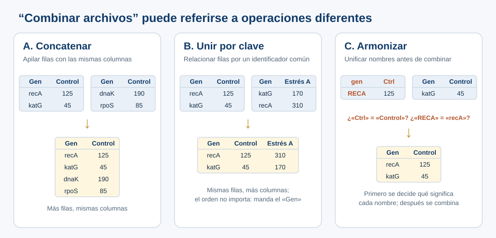

Tres situaciones que requieren criterio científico
Durante el taller · lectura de 4 min
- Tres fallas distintas: tarea indefinida, cita real que no respalda la afirmación y metadatos inventados.
- Ninguna se resuelve solo con un prompt más largo.
- Las respuestas de la IA son simulaciones preparadas para el taller.
Conceptos introductorios
| Concepto | Definición operativa | Advertencia |
|---|---|---|
| Modelo de lenguaje (LLM) | Sistema capaz de generar texto y otras salidas a partir de patrones aprendidos y del contexto que recibe. | No debe asumirse que toda afirmación viene de una fuente comprobada. |
| Prompt | Pregunta, instrucción y/o contexto proporcionado al sistema. | Se usan prompts desde la primera exploración; no existe un único prompt perfecto. |
| Contexto | Antecedentes, datos, fuentes, objetivo, audiencia, restricciones y convenciones pertinentes. | No reemplaza la información experimental faltante. |
| Supuesto | Información que se da por cierta o se introduce para completar una tarea. | Debe distinguirse un supuesto autorizado de uno no respaldado. |
| Inferencia | Conclusión derivada de datos o premisas. | Puede ser plausible sin estar demostrada por el material aportado. |
| Alucinación | Contenido falso, inventado o no sustentado presentado como si fuese válido. | Una cita con formato correcto puede no existir o no sustentar el argumento. |
| Verificación | Contraste con datos, fuentes, criterios o procedimientos externos a la mera afirmación de la IA. | Pedirle al mismo modelo «¿estás seguro?» no equivale a verificar. |
| Especificación | Descripción de una tarea que define propósito, entradas, alcance, límites, entregable y criterios de aceptación. | Más detalle no siempre implica mejor resultado si el problema sigue mal definido. |
| Trazabilidad | Registro que permite reconstruir fuentes, decisiones, transformaciones y revisiones. | Guardar únicamente el último prompt resulta insuficiente en muchos contextos. |
| FAIR | Principios para que datos y recursos digitales sean encontrables, accesibles, interoperables y reutilizables. | FAIR no equivale a «abierto», a un formato particular ni a un sí/no universal. |
Algunos problemas no se resuelven con un prompt más largo, sino aprendiendo conceptos, aportando datos, delimitando expectativas o contrastando evidencia.
Tres ejemplos para discutir
Los términos Description, Discernment y Diligence corresponden a las competencias del marco AI Fluency 4D, que se presenta en la página siguiente; la cuarta, Delegation, se trabaja en la práctica.
Ejemplo 1. Respuesta válida a un encargo ambiguo
Tengo tres archivos con información de genes. Necesito combinarlos en una tabla
Aquí tienes un script que concatena los tres archivos en una sola tabla.
Qué falla: la respuesta es técnicamente correcta, pero «combinar» admite varias operaciones:
- Concatenar: apilar filas si comparten estructura.
- Unir por clave (join): relacionar filas por identificadores comunes.
- Armonizar: resolver sinonimias o columnas con significados/formatos diferentes antes de combinar.
Armonizar suele ser un paso previo a cualquiera de las otras dos. La IA eligió una operación razonable sin saber cuál necesitaba realmente la investigadora: quizá lo que hacía falta era unir por identificador de gen.

Preguntas para el grupo: ¿Qué significa «combinar»? ¿Qué información faltó? ¿En qué casos una solución técnicamente correcta respondería al problema equivocado?
Qué hacer: pedir primero: «¿Qué operaciones podrían corresponder a mi necesidad? Muéstrame entradas/salidas mínimas y pregunta qué necesitas saber antes de recomendar una». Después, comprobar con dos o tres genes que la tabla resultante contiene lo esperado.
Conceptos trabajados: ambigüedad, vocabulario, criterios de aceptación, Description.
Ejemplo 2. La referencia existe, pero no demuestra lo que se le atribuye
Busca evidencia científica de que adoptar FAIR mejora la reproducibilidad de la investigación
Wilkinson et al. (2016) demostraron que implementar FAIR aumenta la reproducibilidad científica un 80 %.
Wilkinson, M. D. et al. (2016). The FAIR Guiding Principles for scientific data management and stewardship. Scientific Data, 3, 160018. https://doi.org/10.1038/sdata.2016.18
Qué falla: la referencia y el DOI son auténticos. El artículo presenta los principios FAIR, su justificación y ejemplos, pero no demuestra empíricamente un incremento del 80 % en reproducibilidad. Esa cifra se ha añadido deliberadamente en la simulación y no debe citarse como hallazgo real [R5].
Preguntas para el grupo: ¿Existe el artículo? ¿Su DOI es correcto? ¿Trata sobre FAIR? ¿Sustenta la afirmación cuantitativa? ¿Qué evidencia se necesitaría para sostenerla?
Qué hacer: revisar la publicación original, identificar su tipo de contribución y buscar en ella el supuesto dato del 80 %. Estar ante una referencia real no basta para validar una afirmación.
Conceptos trabajados: referencia verificable frente a afirmación respaldada, atribución incorrecta, Discernment.
Ejemplo 3. La IA inventa metadatos experimentales
Aquí está mi Excel de genes bajo tres condiciones. Ayúdame a documentarlo para hacerlo FAIR
Los valores corresponden a TPM de RNA-seq con tres réplicas biológicas por condición; Estrés A indica estrés oxidativo.
Qué falla: nada de eso puede determinarse con la tabla de ejemplo. Puede requerirse confirmación experimental externa.
Preguntas para el grupo: ¿Qué se puede observar directamente en el archivo? ¿Qué información necesita confirmación de la investigadora? ¿Cuál es el riesgo de escribir documentación falsa y reutilizarla?
Qué hacer: pedir a la IA que separe lo que se observa en el archivo, lo que infiere y lo que debe confirmar la investigadora, y que deje vacíos los campos que no puede establecer en lugar de rellenarlos.
Conceptos trabajados: diferencia entre dato e interpretación, procedencia, incertidumbre, Diligence.
Cierre de los ejemplos
Las tres fallas son distintas: (1) tarea indefinida; (2) evidencia no confirmada; (3) supuestos presentados como hechos. Las respuestas se prepararon de antemano para ilustrar cada falla; un modelo real puede o no cometerlas en una sesión dada.